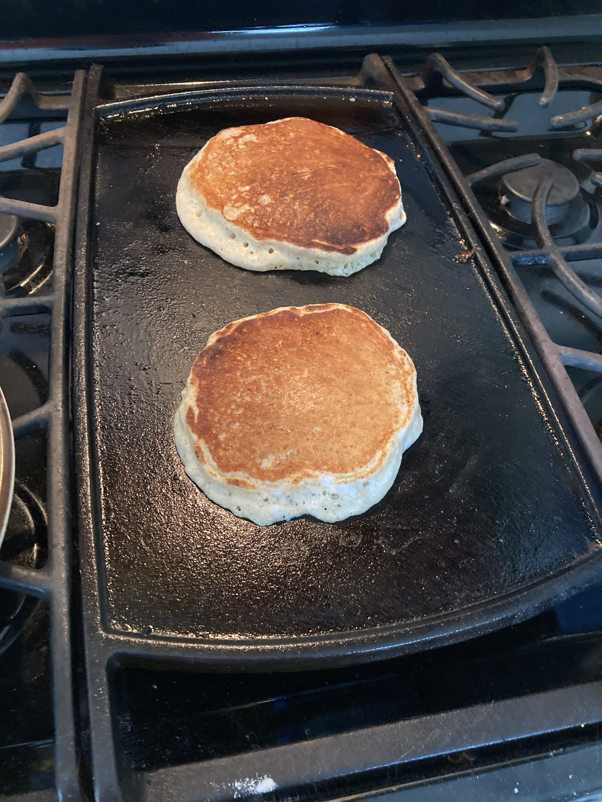

Pancakes

Description
These pancakes pair perfectly with lazy Saturday mornings
Ingredients
- 1 1/4 cups flour
- 2 tablespoons sugar
- 2 teaspoons baking powder
- dash of cinnamon
- Dash of salt
- 1 beaten egg
- 1 cup whole milk
- 1 tablespoon vegetable oil
- dash of vanilla extract
Steps
- Mix wet ingredients in one bowl
- Mix dry ingredients in a different, larger bowl
- Make a well in the dry ingredients and pour wet ingredients into it
- By hand, mix ingredients together until just combined - small lumps okay
- Heat skillet over medium heat until droplets of water skittle across
- Pour 1/4 cup of batter on skillet
- When you see bubbles form, flip the pancake
- Cook pancake until center is dry
- Adjust heat as needed
Tip: you can add goodies - chocolate chips, banana slices, blueberries - while waiting for the bubbles to form in step 7
Return to main page